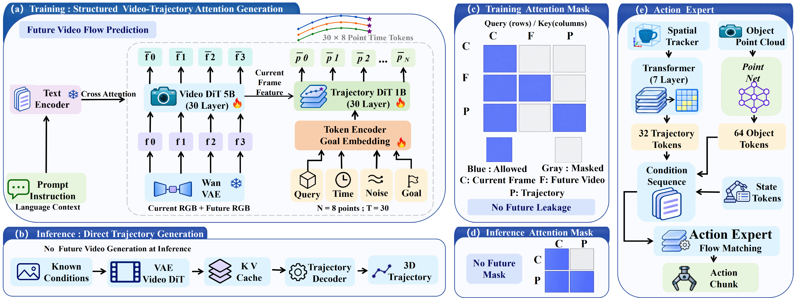

Joint video–trajectory training
Future-video supervision and trajectory flow matching transfer video-learned motion representations to point prediction.
A world point model for manipulation
Video-learned motion priors. Metric point trajectories.
No future-video generation.
The interactive 3D view is unavailable in this browser. Explore the overview and recorded rollouts below.
Drag to rotate · arrow keys supported“Place the cup on the target.”
A short RGB history, language, and query XYZ define the input.
RGB history + language + query XYZIllustrative variations across tasks, scenes, and embodiments; each round changes the object, setting, and robot. These schematic motions illustrate the interface, not measured cross-embodiment performance.
Overview
AtomWPM forecasts the future 3D trajectories of query points on manipulated objects, using a short single-view RGB history, a language instruction, and the queries’ current 3D positions.
Pretrained video models contain useful motion priors, but synthesizing future frames is expensive. AtomWPM transfers these priors to a trajectory expert through joint video–trajectory training. At inference, observed frames pass through the video model once. Cached features then condition trajectory denoising, without generating future video.
The resulting metric trajectories provide a compact interface for manipulation. We evaluate forecasting on LIBERO, RoboTwin 2.0, and real-world data, and use a 4D action expert to turn trajectories into robot actions.
Method
A video expert and a trajectory expert learn together. At test time, only observed-frame features and the trajectory expert are needed for forecasting.

Future-video supervision and trajectory flow matching transfer video-learned motion representations to point prediction.
Trajectory tokens read observed-frame features. Future-video tokens remain masked from trajectory prediction.
Cache observed-frame keys and values once, then jointly denoise the point–time tokens into future metric positions.
Data
RGB observations and language instructions paired with metric 3D trajectories of points on manipulated objects, across real-world and simulated manipulation.
REAL WORLD
Five tasks: cup pick-and-place, paper-bag folding, sponge wiping and return, cup pouring and return, and pot-drawer pulling.
SAM3 + surface-point sampling
SpatialTrackerV2 + depth
SIMULATION
Spatial, Object, Goal, and Long suites, retaining the original task definitions and object-attached surface points.
2,000 training / 400 held-out episodes
Simulator-state 3D trajectories
SIMULATION
Clean training episodes and domain-randomized held-out episodes, with points sampled on manipulated-object meshes.
2,350 training / 470 held-out episodes
Simulator-state 3D trajectories
Episodes are divided into forecasting windows. Each window retains its query identities and supervision masks; short tails are kept.
| Source | Training pool | Held-out test |
|---|---|---|
| LIBERO | 12,243 windows | 2,220 windows |
| RoboTwin 2.0 | 16,645 windows | 3,212 windows |
| Total | 28,888 windows | 5,432 windows |
Forecasting evaluation spans the four LIBERO suites, domain-randomized RoboTwin episodes, and real manipulation. Real-data robustness settings vary object position, occlusion, texture, object color, and table color.
Comparisons share query identities, timestamps, coordinate frames, and validity masks. Endpoint-conditioned variants additionally receive target XYZ.
Real 3D labels are estimated from tracking and depth. Simulation labels are derived from simulator states. These are distinct label sources.
Source: current manuscript, Section 4 and Appendix A. Simulation counts describe the training pool before model-specific validation selection; clips, episodes, and windows are different units. The real format contains 3 history + 30 future frames. Dataset download links will be added when released.
4D prediction
Explore real-world manipulation and simulation results, from rigid motion to articulated objects and deformable paper bags.
Explore 3D point motion across five real-world manipulation tasks.
Fresh AtomWPM inference for the six tasks shown below. Each clip follows one object using the same eight point identities across chunks. The can-in-box clip shows the first five seconds; the other clips show their complete selected manipulation segments.
H3/F30, 10 denoising steps. Observations are refreshed and true endpoint XYZ is supplied at each chunk. Raw predicted tracks are shown without smoothing; chunk boundaries are marked. LIBERO plays at source speed; RoboTwin plays at 0.4× source speed for readability.
Robot execution
In these four rollouts, AtomWPM predicts point trajectories that are passed to the action decoder to guide physical robot execution.

Human demonstrations
Trajectories extracted from human demonstrations are provided to the action decoder to produce robot actions. Each task pairs the human demonstration with the corresponding robot execution.
Experimental results
Selected results reported in the current paper. Forecasting comparisons use matched endpoint inputs; robot-control numbers describe the complete action-expert system.
Four denoising steps, endpoint-conditioned simulation and real-data settings.
Reported endpoint-conditioned inference comparison; see the paper for hardware and protocol.
65.0% vs. 32.5% for π₀.₅, using AtomWPM trajectories with the action expert.
Average across four tasks, with 10 trials per task in each setting.
| Method | Trajectory source | In-domain | Cross-scene | Cross-object |
|---|---|---|---|---|
| π₀.₅ | — | 57.5% | 32.5% | 32.5% |
| 4D action expert | Human demonstration | 62.5% | 62.5% | 60.0% |
| 4D action expert | AtomWPM | 65.0% | 65.0% | 57.5% |
Source: current paper, Tables 1–3. Cross-scene changes the scene appearance; cross-object replaces training objects with objects of different textures. These are reported experiment results, separate from the selected visual examples above.
Open research
Paper, source code, model weights, and data will be linked here when released.